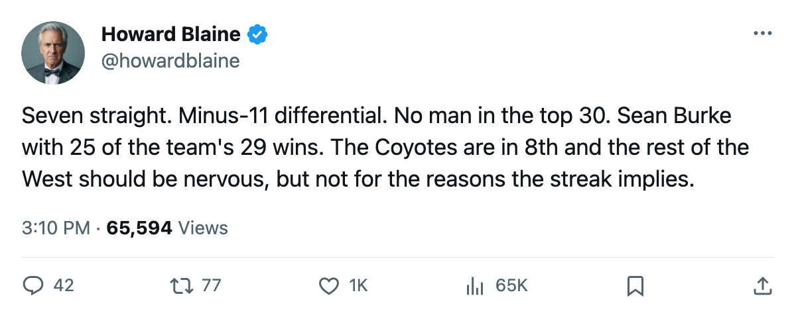
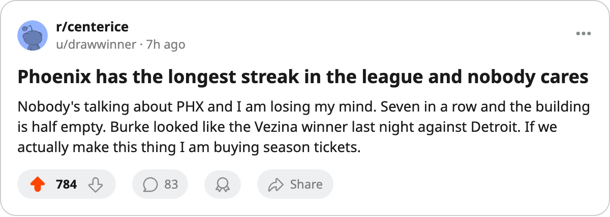

Phoenix has won 7 in a row on minus-11 hockey, the longest active streak in the league, and the 8th spot is 3 points from being someone else's problem
The Coyotes score 2.94 a night, own the worst goal differential of any club in the Western Conference's top 8, and Sean Burke has started 52 of their 64 games
 Howard BlaineSenior writer, The Blaine Rankings · The Hockey Gazette
Howard BlaineSenior writer, The Blaine Rankings · The Hockey Gazette
The piece
The  Phoenix Coyotes Coyotes have won seven consecutive games, the longest active streak in hockey, and they hold 8th place in the Western Conference on a goal differential of minus-11. No other club in the conference's top 8 carries a gap that wide.
Phoenix Coyotes Coyotes have won seven consecutive games, the longest active streak in hockey, and they hold 8th place in the Western Conference on a goal differential of minus-11. No other club in the conference's top 8 carries a gap that wide.  Edmonton Oilers sits at minus-2,
Edmonton Oilers sits at minus-2,  Mighty Ducks of Anaheim at minus-2, and the other five clubs above the playoff line all sit positive. Phoenix at minus-11 is the outlier, and it has been winning anyway.
Mighty Ducks of Anaheim at minus-2, and the other five clubs above the playoff line all sit positive. Phoenix at minus-11 is the outlier, and it has been winning anyway.
In seven games since 2005-02-18, the Coyotes have scored 21 goals and allowed 11, a differential of plus-10. The full-season gap remains minus-11.  Sean Burke84, graded 88 by the Bureau's Book, has 25 wins in 52 starts this season. The club has 29 wins. He has carried 25 of them.
Sean Burke84, graded 88 by the Bureau's Book, has 25 wins in 52 starts this season. The club has 29 wins. He has carried 25 of them.
What a low-scoring club does with a hot goaltender
Phoenix has scored 188 goals in 64 games, 2.94 a night. That is the fourth-lowest figure in the Western Conference, behind only  San Jose Sharks at 2.77, Mighty Ducks of Anaheim at 2.86, and
San Jose Sharks at 2.77, Mighty Ducks of Anaheim at 2.86, and  Columbus Blue Jackets at 2.92. The difference is that Phoenix has 68 points and a place inside the playoff line. San Jose has 60 points. Columbus has 62.
Columbus Blue Jackets at 2.92. The difference is that Phoenix has 68 points and a place inside the playoff line. San Jose has 60 points. Columbus has 62.
No Phoenix player appears among the league's top 30 in scoring. Shane Doan, who managed 110 points last season, is nowhere on that list this year. Mike Sillinger, who had 101 last spring, is absent. The Coyotes do not have a 90-point man, an 80-point man, or a 70-point man that the league's scoring sheet can find. They have a 35-year-old goaltender with a 2.86 GAA, a 0.863 save percentage, and 25 of the team's 29 wins.
The streak has come against a mix of opponents, two of them division rivals and five from outside the Pacific. They beat  Dallas Stars 2-1 on the road, lost to the same club 4-3 on 2005-02-08 and had been 2-2-1 against them in the season series before the streak. They beat Mighty Ducks of Anaheim 2-0 at home. The 2-1 win at
Dallas Stars 2-1 on the road, lost to the same club 4-3 on 2005-02-08 and had been 2-2-1 against them in the season series before the streak. They beat Mighty Ducks of Anaheim 2-0 at home. The 2-1 win at  Detroit Red Wings on 2005-03-02 was another one-goal game. Four of the seven wins have been by a single goal. None has been by more than two.
Detroit Red Wings on 2005-03-02 was another one-goal game. Four of the seven wins have been by a single goal. None has been by more than two.
The 8th spot, and who is breathing down it
Phoenix sits on 68 points with 18 games remaining.  Los Angeles Kings is 9th at 65 with 17 games left, 3 points back.
Los Angeles Kings is 9th at 65 with 17 games left, 3 points back.  St. Louis Blues is 10th at 63, and its six-game winning streak from mid-February has broken: the Blues are on a three-game losing skid heading into Wednesday's road game at Edmonton Oilers. Columbus Blue Jackets at 62 and San Jose Sharks at 60 round out the chase.
St. Louis Blues is 10th at 63, and its six-game winning streak from mid-February has broken: the Blues are on a three-game losing skid heading into Wednesday's road game at Edmonton Oilers. Columbus Blue Jackets at 62 and San Jose Sharks at 60 round out the chase.
The Coyotes' own schedule this week offers a genuine path. They play at  Pittsburgh Penguins on 2005-03-04, a club 3 points behind them in the standings and 10th in the Eastern Conference. They travel to San Jose Sharks on 2005-03-06, who are 8 points back in the West. They host St. Louis Blues on 2005-03-08, who are 5 points back. The only difficult date is 2005-03-10 at
Pittsburgh Penguins on 2005-03-04, a club 3 points behind them in the standings and 10th in the Eastern Conference. They travel to San Jose Sharks on 2005-03-06, who are 8 points back in the West. They host St. Louis Blues on 2005-03-08, who are 5 points back. The only difficult date is 2005-03-10 at  Colorado Avalanche, who sit 2nd in the conference on 86 points and a plus-52 differential. Three of the four opponents are clubs the 8th-place arithmetic says should not be ahead of Phoenix, and Phoenix has the games to extend its lead on them.
Colorado Avalanche, who sit 2nd in the conference on 86 points and a plus-52 differential. Three of the four opponents are clubs the 8th-place arithmetic says should not be ahead of Phoenix, and Phoenix has the games to extend its lead on them.
The building says what the record says
Phoenix draws 12,027 a night, the lowest attendance in the league. The ticket costs $80. The payroll is $47.81M, the 14th-highest in the 30-club league. The profit is $11.86M. The Coyotes are the cheapest club in the Western Conference's top 8 by payroll among those that do not carry a 25-win goaltender carrying the construction.
What makes the construction fragile is the arithmetic I have written twice this season already: a club with a negative goal differential that finds a way to win one-goal games is a club whose wins depend on goaltender performance and small margins, and goaltender performance regresses over 18 games. The Bureau has Burke at 88, below  Brodeur97's 94 and
Brodeur97's 94 and  Giguere97's 95 and
Giguere97's 95 and  Khabibulin93's 94 and
Khabibulin93's 94 and  Turco93's 94. A club that scores 2.94 a night and wins 1-0 or 2-1 is a club that cannot absorb a goaltender settling back toward his true number.
Turco93's 94. A club that scores 2.94 a night and wins 1-0 or 2-1 is a club that cannot absorb a goaltender settling back toward his true number.
The counter-argument is simple: the games are still there. Phoenix is 7-8-1 inside the Pacific Division, where it has scored 38 goals in 16 meetings, but the remaining 18 games include only 3 inside the division. The schedule this week alone has three non-division games against clubs below .500.
Howard Blaine's position: the Coyotes hold the 8th spot tonight and have three games against the clubs chasing them in the next eight days. If the differential improves by the deadline on 2005-03-19, I will have been wrong to worry about the minus-11. If it widens, the one-goal construction will tell you why. I expect Phoenix to earn a point in at least 2 of its 4 games this week.

